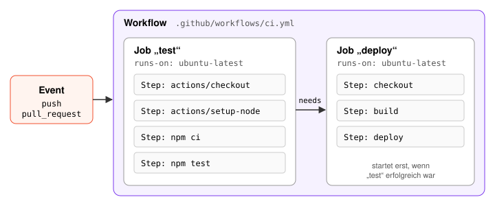

Lektion 2.5 — Teil 2: Branches & Zusammenarbeit
GitHub Actions
Lernziele
- Die Begriffe Continuous Integration und Continuous Deployment erklären
- Den Aufbau eines Workflows (Event, Job, Step, Runner, Action) beschreiben
- YAML-Dateien lesen und korrekt einrücken
- Einen CI-Workflow schreiben, der bei Push und Pull Request Tests ausführt
- Fehlgeschlagene Läufe im Reiter Actions analysieren und Status Checks in Pull Requests nutzen
- Secrets sicher verwenden und eine Website per Workflow auf GitHub Pages veröffentlichen
1 — Wozu Automatisierung?
Im Feature-Branch-Workflow prüft ein Mensch jeden Pull Request. Manche Prüfungen sind aber stumpf und fehleranfällig, wenn man sie von Hand macht: Laufen alle Tests? Lässt sich das Projekt bauen? Ist das HTML gültig? Solche Aufgaben erledigt eine Maschine bei jedem Push zuverlässig.
| Begriff | Bedeutung |
|---|---|
| Continuous Integration (CI) | Jede Änderung wird automatisch gebaut und getestet, sobald sie gepusht wird. Fehler fallen sofort auf, nicht erst Tage später. |
| Continuous Deployment (CD) | Hat eine Änderung alle Prüfungen bestanden und ist in main, wird sie automatisch veröffentlicht (z. B. auf einen Webserver). |
GitHub Actions ist das in GitHub eingebaute Werkzeug dafür. Die Konfiguration liegt als Datei im Repository — sie wird also selbst versioniert und über Pull Requests geändert.
2 — Die Bausteine

| Begriff | Bedeutung |
|---|---|
| Workflow | Eine automatisierte Abfolge, definiert in einer YAML-Datei unter .github/workflows/. Ein Repository kann beliebig viele Workflows haben. |
| Event | Das Ereignis, das den Workflow startet: Push, Pull Request, Zeitplan, Klick auf einen Button … |
| Job | Eine Gruppe von Schritten, die gemeinsam auf einer Maschine laufen. Mehrere Jobs laufen standardmäßig parallel; mit needs wartet ein Job auf einen anderen. |
| Step | Ein einzelner Schritt: entweder ein Shell-Befehl (run) oder eine fertige Action (uses). Schlägt ein Step fehl, bricht der Job ab. |
| Runner | Die (virtuelle) Maschine, auf der ein Job läuft, z. B. ubuntu-latest, windows-latest, macos-latest. Sie wird für jeden Job frisch erzeugt und danach gelöscht. |
| Action | Ein wiederverwendbarer Baustein aus dem GitHub Marketplace, z. B. actions/checkout (Repository auf den Runner klonen) oder actions/setup-node (Node.js installieren). |
3 — YAML in fünf Minuten
Workflows sind in YAML geschrieben, einem Format für strukturierte Daten wie JSON, aber ohne Klammern: Die Struktur ergibt sich aus der Einrückung.
# Kommentar
name: Steckbrief # Schlüssel: Wert (String, Anführungszeichen optional)
version: 3 # Zahl
aktiv: true # Boolean
autor: # verschachteltes Objekt: eingerückt mit 2 Leerzeichen
name: Max Muster
klasse: 3AHIF
hobbys: # Liste: jedes Element beginnt mit "- "
- Klettern
- Gitarre
sprachen: [HTML, CSS, Java] # Liste in Kurzschreibweise
beschreibung: | # mehrzeiliger Text, Zeilenumbrüche bleiben erhalten
Zeile eins
Zeile zweiYAML erlaubt zum Einrücken ausschließlich Leerzeichen. Eine falsche Einrückung ändert die Bedeutung oder macht die Datei ungültig — GitHub zeigt dann im Reiter Actions einen Fehler wie Invalid workflow file. VS Code mit der Erweiterung „GitHub Actions“ markiert solche Fehler schon beim Tippen.
4 — Der erste Workflow
Lege im Repository die Datei .github/workflows/hallo.yml an (die Ordner .github und workflows musst du selbst erstellen), committe und pushe sie:
name: Hallo
on:
push:
workflow_dispatch:
jobs:
begruessen:
runs-on: ubuntu-latest
steps:
- name: Hallo sagen
run: echo "Hallo ${{ github.actor }}, Branch $GITHUB_REF_NAME"
- name: Was liegt auf dem Runner?
run: ls -la
- name: Repository auschecken
uses: actions/checkout@v6
- name: Und jetzt?
run: ls -la| Zeile | Bedeutung |
|---|---|
name: Hallo | Anzeigename im Reiter Actions |
on: | Events: bei jedem Push und manuell per Button („Run workflow“) |
jobs: begruessen: | ein Job mit der ID begruessen |
runs-on: ubuntu-latest | auf einem aktuellen Ubuntu-Runner ausführen |
steps: | Liste der Schritte; name ist optional, aber hilfreich in den Logs |
run: | Shell-Befehl auf dem Runner |
uses: actions/checkout@v6 | fertige Action in Version 6 verwenden |
${{ github.actor }} | Ausdruck: wird vor dem Ausführen durch einen Wert ersetzt (hier: wer gepusht hat). $GITHUB_REF_NAME ist eine Umgebungsvariable des Runners. |
Öffne auf GitHub den Reiter Actions: Dort erscheint der Lauf. Ein Klick auf den
Job zeigt die Logs jedes Steps. Du wirst sehen: Beim ersten ls -la ist der Ordner
leer. Der Runner ist eine frische Maschine — dein Code ist erst nach
actions/checkout da. Fast jeder Workflow beginnt deshalb mit diesem Step.
Ein Step gilt als fehlgeschlagen, wenn sein Befehl mit einem Exit-Code ungleich 0 endet (z. B. ein fehlgeschlagener Test). Dann wird der Job rot (✗), die folgenden Steps laufen nicht mehr, und GitHub schickt dir eine Benachrichtigung. Grün (✓) = alles bestanden, gelb = läuft noch. Mit Re-run jobs kann man einen Lauf wiederholen.
5 — Wann läuft ein Workflow? Events
| Event | Auslöser |
|---|---|
push | Push auf einen Branch; mit branches: [main] nur für bestimmte Branches |
pull_request | PR wird geöffnet oder neue Commits kommen hinzu |
workflow_dispatch | manueller Start über den Button „Run workflow“ |
schedule | Zeitplan im Cron-Format, z. B. - cron: '0 6 * * 1' = jeden Montag 6:00 UTC |
release, issues, … | viele weitere GitHub-Ereignisse |
on:
push:
branches: [main]
pull_request:
branches: [main]
paths-ignore:
- '**.md' # reine Doku-Änderungen lösen keinen Lauf ausMit dieser Konfiguration läuft die Prüfung für jeden PR nach main und noch einmal nach dem Merge auf main.
6 — Continuous Integration für ein Node-Projekt
Ein typisches Webprojekt mit npm (z. B. aus dem React-Kurs) hat in package.json ein Skript test. Der folgende Workflow installiert die Abhängigkeiten und führt die Tests aus:
name: CI
on:
push:
branches: [main]
pull_request:
jobs:
test:
runs-on: ubuntu-latest
steps:
- uses: actions/checkout@v6
- uses: actions/setup-node@v6
with:
node-version: 24
cache: npm
- run: npm ci
- run: npm run build
- run: npm testwith:übergibt Parameter an eine Action — hier die Node-Version und das Zwischenspeichern der npm-Downloads zwischen Läufen.npm ciinstalliert exakt die Versionen auspackage-lock.json(die Datei muss committet sein). Das ist reproduzierbarer und schneller alsnpm install.- Schlägt
npm run buildoder ein Test fehl, wird der Job rot.
Mehrere Versionen gleichzeitig: Matrix
jobs:
test:
runs-on: ubuntu-latest
strategy:
matrix:
node-version: [22, 24]
steps:
- uses: actions/checkout@v6
- uses: actions/setup-node@v6
with:
node-version: ${{ matrix.node-version }}
- run: npm ci
- run: npm testGitHub startet den Job zweimal parallel, einmal pro Wert in der Matrix.
Für Java gibt es actions/setup-java (z. B. mit mvn -B verify), für Python
actions/setup-python. Das Muster ist immer gleich: auschecken, Werkzeug einrichten, bauen, testen.
7 — Status Checks im Pull Request
Läuft ein Workflow bei pull_request, zeigt der PR unten im Reiter Conversation das
Ergebnis an: All checks have passed oder Some checks were not successful mit Link
zu den Logs. Im Reiter Checks siehst du alle Läufe.
Zusammen mit den Branch-Regeln aus Lektion 2.4 entsteht ein Qualitätstor: Im Ruleset für main
Require status checks to pass aktivieren und unter Add checks den Job
(hier test) auswählen. Dann ist der Merge-Button gesperrt, solange der Check rot ist —
auch für den Owner.
Der Status eines Workflows lässt sich als Bild im README zeigen. Im Reiter Actions den Workflow wählen → Menü … → Create status badge — GitHub liefert die fertige Markdown-Zeile.
8 — Secrets und Berechtigungen
Manche Workflows brauchen Zugangsdaten, z. B. ein Passwort für einen Webserver oder einen API-Key. Diese gehören nie in die YAML-Datei (die ist für alle mit Leserechten sichtbar), sondern unter Settings → Secrets and variables → Actions → New repository secret:
- name: Auf den Server hochladen
run: ./deploy.sh
env:
DEPLOY_TOKEN: ${{ secrets.DEPLOY_TOKEN }}- Secrets sind nach dem Speichern nicht mehr lesbar, auch nicht für den Owner, und erscheinen in Logs als
***. - Workflows, die durch PRs aus Forks ausgelöst werden, bekommen keine Secrets — sonst könnte jeder sie mit einem präparierten PR auslesen.
- Jeder Lauf erhält automatisch ein kurzlebiges Token
GITHUB_TOKENfür Zugriffe auf das eigene Repository. Mitpermissions:legst du fest, was es darf — so wenig wie möglich.
Eine Action aus dem Marketplace läuft mit Zugriff auf deinen Code und deine Secrets. Verwende
bevorzugt offizielle Actions (actions/…) oder solche von verifizierten Herstellern, und gib immer
eine Version an (@v6), nie @main.
9 — Continuous Deployment: GitHub Pages
GitHub Pages veröffentlicht statische Websites (HTML, CSS, JavaScript) kostenlos
unter https://<benutzername>.github.io/<repository>/. Mit einem Workflow
geschieht das automatisch nach jedem Push auf main — aber nur, wenn vorher alle Prüfungen
bestanden sind.
Einmalig in den Repository-Einstellungen: Settings → Pages → Build and deployment → Source: GitHub Actions.
name: Prüfen und veröffentlichen
on:
push:
branches: [main]
pull_request:
workflow_dispatch:
jobs:
check:
runs-on: ubuntu-latest
steps:
- uses: actions/checkout@v6
- uses: actions/setup-node@v6
with:
node-version: 24
- name: HTML prüfen
run: npx --yes html-validate "*.html"
deploy:
needs: check
if: github.ref == 'refs/heads/main'
runs-on: ubuntu-latest
permissions:
pages: write
id-token: write
environment:
name: github-pages
url: ${{ steps.deployment.outputs.page_url }}
steps:
- uses: actions/checkout@v6
- uses: actions/configure-pages@v5
- uses: actions/upload-pages-artifact@v5
with:
path: .
- id: deployment
uses: actions/deploy-pages@v5| Teil | Bedeutung |
|---|---|
Job check | prüft alle HTML-Dateien mit dem npm-Paket html-validate; npx --yes lädt es ohne Installation |
needs: check | deploy startet nur, wenn check erfolgreich war |
if: github.ref == 'refs/heads/main' | bei Pull Requests wird nur geprüft, veröffentlicht wird nur von main |
permissions | das GITHUB_TOKEN darf auf Pages schreiben — sonst nichts |
environment | zeigt die URL der veröffentlichten Seite im Lauf und auf der Startseite des Repositorys an |
upload-pages-artifact mit path: . | verpackt den Inhalt des Repository-Ordners (bei Vite-Projekten stattdessen z. B. dist nach einem Build-Step) |
deploy-pages | veröffentlicht das Paket auf GitHub Pages |
Die Beispiele verwenden die Hauptversionen mit Stand November 2026. Welche aktuell ist, steht auf der Seite der jeweiligen Action im Marketplace bzw. auf GitHub unter Releases. Ältere Hauptversionen funktionieren meist weiter, erzeugen aber irgendwann Warnungen im Log.
Für eine reine HTML-Seite ohne Prüfung geht es auch einfacher: Settings → Pages → Source:
Deploy from a branch, Branch main, Ordner / (root). GitHub veröffentlicht dann jeden Push
auf main direkt.
10 — Kosten und Grenzen
- Für öffentliche Repositories sind die Standard-Runner von GitHub kostenlos.
- Für private Repositories enthält jeder Plan ein monatliches Freikontingent an Minuten; Windows- und macOS-Runner verbrauchen es schneller als Linux.
- Ein Job darf höchstens einige Stunden laufen; geplante Workflows in Repositories ohne Aktivität werden nach einiger Zeit automatisch deaktiviert.
- Die aktuellen Zahlen stehen in der GitHub-Dokumentation unter „Billing for GitHub Actions“.
Projektschritt
Steckbrief automatisch prüfen und veröffentlichen
- Stelle unter Settings → Pages die Quelle auf GitHub Actions.
- Lege auf einem Branch
feature/pagesdie Dateien.github/workflows/pages.yml(aus Abschnitt 9) und.htmlvalidate.jsonan. Die Konfiguration wählt die Regeln „standard“ (Einhaltung des HTML-Standards);html-validate:recommendedwäre strenger.
{
"extends": ["html-validate:standard"]
}- Baue absichtlich einen Fehler ein, z. B. ein vergessenes
</ul>oder dieselbeidan zwei Elementen. Pushe und öffne einen PR: Der Checkcheckwird rot. Lies im Log, welche Zeile bemängelt wird. - Behebe den Fehler mit einem weiteren Commit auf dem Branch — der Check wird grün.
- Ergänze im Ruleset für
mainRequire status checks to pass mit dem Checkcheck. - Merge den PR. Im Reiter Actions läuft jetzt auch
deploy; danach ist dein Steckbrief unter https://<name>.github.io/steckbrief/ online. - Füge die Adresse oben rechts im Repository unter About → Website ein und ein Status-Badge in
README.md.
git switch main && git pull
git switch -c feature/pages
mkdir -p .github/workflows
# pages.yml und .htmlvalidate.json anlegen
git add .github .htmlvalidate.json
git commit -m "Workflow für Prüfung und GitHub Pages"
git push -u origin feature/pagesErgebnis: Jede Änderung am Steckbrief wird im PR automatisch geprüft und nach dem Merge ohne weiteres Zutun veröffentlicht — der komplette Weg vom Commit bis zur Website.
Häufige Fehler
3 Fehler · zum Aufklappen klicken
Die Datei liegt in .github/workflow/ci.yml oder github/workflows/ci.yml. Im Reiter Actions passiert nichts.
Der Pfad muss exakt .github/workflows/ lauten (mit Punkt, Mehrzahl) und die Endung .yml oder .yaml haben.
GitHub meldet Invalid workflow file: … unexpected value 'runs-on', weil runs-on nicht unter dem Job, sondern auf gleicher Ebene steht.
Einrückung mit Leerzeichen prüfen: jobs: → Job-ID (2 Leerzeichen) → runs-on, steps (4 Leerzeichen) → Listenelemente. Einen YAML-fähigen Editor verwenden.
npm ci scheitert mit The `npm ci` command can only install with an existing package-lock.json, obwohl die Datei im Repository liegt.
Der Runner startet leer. Als ersten Step uses: actions/checkout@v6 eintragen.
Aufgaben
3 Aufgaben + Bonus · zum Aufklappen klicken
Lege den Workflow hallo.yml aus Abschnitt 4 an. Starte ihn einmal per Push und einmal manuell über „Run workflow“. Vergleiche die Ausgaben von github.actor und $GITHUB_REF_NAME sowie die beiden ls -la. Ergänze einen Step, der mit exit 1 absichtlich fehlschlägt, und beobachte, was mit den folgenden Steps passiert.
Nimm ein Projekt aus dem JavaScript- oder React-Kurs mit package.json (oder lege mit npm init -y ein neues an und setze das Skript test auf node --test). Schreibe einen Workflow nach Abschnitt 6, der bei jedem PR läuft. Baue einen fehlschlagenden Test ein und zeige, dass der PR einen roten Check bekommt.
Schreibe einen Workflow, der jeden Montag um 7:00 Uhr österreichischer Zeit (Achtung: Cron läuft in UTC) und per Button startet und mit date und git log --oneline -5 ausgibt, was in der letzten Woche committet wurde. Tipp: actions/checkout holt standardmäßig nur den letzten Commit; mit with: fetch-depth: 0 die ganze Historie.
Erweitere deinen CI-Workflow aus Aufgabe 2 um eine Matrix über os: [ubuntu-latest, windows-latest, macos-latest] (runs-on: ${{ matrix.os }}) und zwei Node-Versionen. Wie viele Jobs entstehen? Vergleiche die Laufzeiten.
Quiz
5 Fragen · zum Aufklappen klicken
Frage 1 Wo muss eine Workflow-Datei liegen, damit GitHub sie ausführt?
.github/workflows/. Sie sind damit normale, versionierte Dateien im Repository.Frage 2 Warum beginnt fast jeder Job mit uses: actions/checkout?
actions/checkout klont das Repository dorthin.Frage 3 Welche Aussagen über Jobs und Steps stimmen?
Mehrere Antworten sind richtig.
needs aus.Frage 4 Ein Workflow braucht einen API-Key. Wie wird er richtig eingebunden?
Frage 5 Was bewirkt Require status checks to pass in einem Ruleset für main?